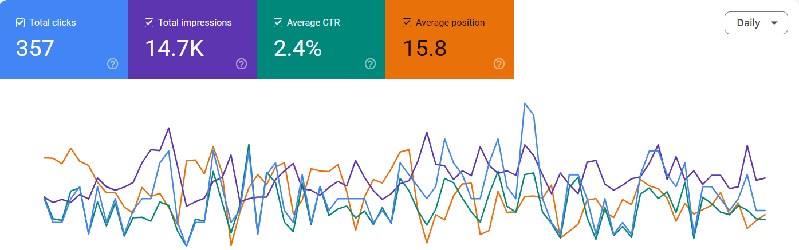

Tyre Express 24/7
SEO case study covering Local SEO, Technical SEO, keyword research, on-page optimization, content strategy and early organic search performance for a newly launched mobile tyre fitting business in Scotland.
Project Overview
Tyre Express 24/7 is a newly launched mobile tyre fitting business targeting customers across Scotland. The SEO campaign focused on establishing organic visibility, targeting relevant local searches and building a strong foundation for long-term search growth.
Project Duration
2 Months
Industry
Mobile Tyre Fitting
Target Market
Scotland, UK
SEO Focus
Local & Technical SEO
SEO Strategy
The campaign focused on building the website's organic search foundation while targeting commercially relevant local searches.
Local SEO
- Targeted location-based search opportunities across Scotland.
- Focused on mobile tyre fitting and local service searches.
- Structured location and service content around user intent.
Keyword Research
- Researched relevant tyre fitting and mobile tyre service keywords.
- Identified commercial and location-based search opportunities.
- Prioritised keywords based on search intent and business relevance.
On-Page SEO
- Optimised page titles and meta descriptions.
- Improved heading structure and content relevance.
- Strengthened internal linking between relevant pages.
Technical SEO
- Reviewed website structure and crawlability.
- Monitored indexing and search visibility through Google Search Console.
- Identified technical opportunities to support organic performance.
Content Strategy
- Developed content around relevant tyre fitting services.
- Focused on answering local customer search intent.
- Built content designed to support both users and search engines.
Search Performance Monitoring
- Monitored clicks and impressions through Google Search Console.
- Reviewed average position and CTR.
- Used search performance data to identify future SEO opportunities.
Early SEO Results
As this is a newly launched website, these figures represent early organic search performance during the initial SEO campaign rather than before-and-after growth.
Google Search Console Performance
The Google Search Console data below demonstrates the website's early organic search performance during the campaign.

Google Search Console performance for Tyre Express 24/7.
SEO Skills Applied
- Local SEO
- Technical SEO
- On-Page SEO
- Keyword Research
- Content Strategy
- Internal Linking
- Google Search Console
- Search Intent Analysis
- Local Keyword Targeting
- SEO Performance Monitoring
Project Summary
My work on Tyre Express 24/7 focused on establishing a strong SEO foundation for a new local business website. During the approximately two-month campaign, the strategy combined Technical SEO, Local SEO, keyword research, on-page optimisation, content planning and Google Search Console monitoring.
The early search performance demonstrates that the website began gaining organic visibility and attracting search users during its initial growth stage. Continued optimisation, content development and local search targeting can provide further opportunities for organic growth.